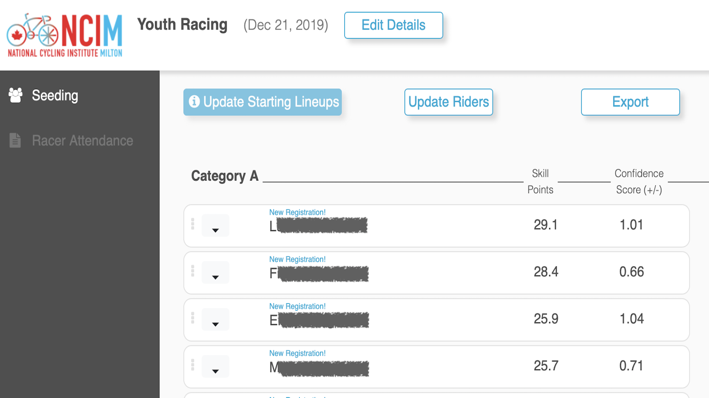

Subscribe to our Newsletter
Enter your email:
How to protect yourself and your City from Corona Virus
At a time of growing fear around the spread of the Covid-19 coronavirus,
it’s not hard to tumble into a spiral of catastrophizing.
Even the most mundane interactions of urban life suddenly feel like a high-stakes gamble: Gripping a subway strap,
a doorknob at the co-working space, an e-scooter handlebar,
or a jug of half-and-half at the coffee shop means swapping germs with who-knows-how-many other people.
Suddenly, the epidemiological dimensions to the “sharing economy” have become obvious.
Even if you’re young, healthy and not as susceptible to a fatal dose of the disease,
the risk of carrying the infection to more vulnerable populations is frightening, too.
As a student, our lifestyle has changed and we have to adapt to the new situation. Since all the class contents will be delivered online, that requires us to stay at home happy and healthy. There are different strategies that you can try to ensure you are healthy.
To address your health, try and do the following
To address your work, try and do the following
During this pandamic, it is important to stay aware of the latest information on the COVID-19 outbreak. There are multiple resources available online. You can go to the following websites to follow the world-wide update on corona virus and how fast its spreading.
It is critical that you use hand sanitizer when you go outside. For an example, if you go to a grocery store, make sure you use hand sanitizer before entering the store and after leaving the store. According to Dr. Rishi Desai, chief medical officer of Osmosis, and a former epidemic intelligence service officer in the division of viral diseases at the CDC, says that the hand sanitizer recipe below will kill 99.9 percent of germs after 60 seconds.
Hand Sanitizer Recipe
Here is what you will need
Directions:
Creating a compassionate city
During this outbreak, there are lots of people in KW region who needs help with their supplies. Lots of elderly people can not go out and get groceries. Here is what you can do to help them.
As a student, our lifestyle has changed and we have to adapt to the new situation. Since all the class contents will be delivered online, that requires us to stay at home happy and healthy. There are different strategies that you can try to ensure you are healthy.
To address your health, try and do the following
- Take your temperature every morning
- Look for any symptoms
- Wash your hands frequently
- Do not go out unless you have to
- Do not stress about toilet paper
- Maintain social distancing
To address your work, try and do the following
- Make sure you have a designated workspace
- Take a break at least every two hours
- Go out for a walk if possible. A short walk will improve your mental health
- Reach out to friends and family if you feel depressed
- Make sure you have enough supplies/food at home to last a while
During this pandamic, it is important to stay aware of the latest information on the COVID-19 outbreak. There are multiple resources available online. You can go to the following websites to follow the world-wide update on corona virus and how fast its spreading.
-
Corona Virus, case-by-case to get world-wide update.
-
Corona Virus resources in Canada, to get Canada wide updates.
It is critical that you use hand sanitizer when you go outside. For an example, if you go to a grocery store, make sure you use hand sanitizer before entering the store and after leaving the store. According to Dr. Rishi Desai, chief medical officer of Osmosis, and a former epidemic intelligence service officer in the division of viral diseases at the CDC, says that the hand sanitizer recipe below will kill 99.9 percent of germs after 60 seconds.
Hand Sanitizer Recipe
Here is what you will need
- 3/4 cup of isopropyl or rubbing alcohol (99 percent)
- 1/4 cup of aloe vera gel (to help keep your hands smooth and to counteract the harshness of alcohol)
- 10 drops of essential oil, such as lavender oil, or you can use lemon juice instead
Directions:
- Pour all ingredients into a bowl, ideally one with a pouring spout like a glass measuring container.
- Mix with a spoon and then beat with a whisk to turn the sanitizer into a gel.
- Pour the ingredients into an empty bottle for easy use, and label it “hand sanitizer.”
Creating a compassionate city
During this outbreak, there are lots of people in KW region who needs help with their supplies. Lots of elderly people can not go out and get groceries. Here is what you can do to help them.
- Donate to local food bank.
- Offer assistance to at-risk neighbors.
- Plan to stay in touch from afar.
Recent Articles

Know more about COVID-19 Pandamic
March 20, 2020
Know more about COVID-19 Pandami
March 20, 2020
Know more about COVID-19 Pandami
March 20, 2020
Know more about COVID-19 Pandami
March 20, 2020